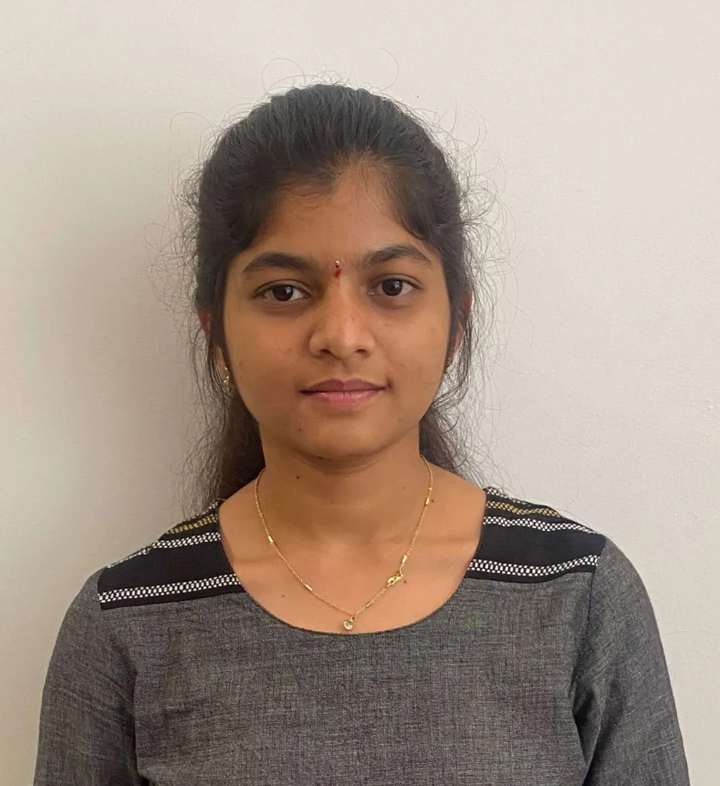

Make access intentional
Role-based access and secure workflows are part of how a tool is designed, starting with TicketX.
DevSecOps Engineer · Security Engineering · CEH
SECURITY · ENGINEERING · INTELLIGENT SYSTEMS
I build security into the way systems work — from access-aware internal tools and code review to AI environments, application validation, and audit readiness.

01 ABOUT
I'm Navya Reddy Mukthapuram, a DevSecOps Engineer at Xevyte Technologies with a foundation in security operations, IT controls, and practical problem-solving.
I started as a Security Analyst on June 10, 2024, working with alerts, phishing analysis, VAPT support, and governance. My responsibilities grew into internal tooling, security automation, code review architecture, and AI environment validation. On August 1, 2026, I moved into DevSecOps engineering.
I enjoy taking ownership of a problem, understanding how teams work, and making the next iteration safer and more useful.
Role-based access and secure workflows are part of how a tool is designed, starting with TicketX.
Use practical internal tools to reduce manual assessment effort and help teams focus on security findings.
Pair functional and security validation with clear evidence, documentation, and follow-through.
02 SELECTED WORK
Internal tools and engineering contributions shaped by real security workflows. Explore the design, the tools involved, and my contribution to each project.
APPLICATIONS BUILT WITH THE TEAM
Contributions across workforce intelligence, unified security operations, and vulnerability assessment at Xevyte Technologies.
03 TOOLKIT
A toolkit grounded in security operations, internal engineering, and governance.
01 / SECURE DEVELOPMENT
Applied through the Code Review Dashboard and TicketX.
02 / SECURITY OPERATIONS
Hands-on operations, incident support, and assessment workflows.
03 / AI & AUTOMATION
AI environment integration, testing, and an IoT engineering foundation.
04 / GOVERNANCE & ASSURANCE
Control assessments, audit evidence, and compliance readiness.
04 CREDENTIALS
EC-COUNCIL
Practical security knowledge applied to testing, analysis, and engineering.
CYBRARY
Building a foundation for security operations.
PALO ALTO NETWORKS
Core concepts behind information security.
CISCO NETWORKING ACADEMY
Foundations for continued learning in cybersecurity.
05 EXPERIENCE & EDUCATION
EXPERIENCE
01 AUG 2026 — PRESENT
Xevyte Technologies Pvt. Ltd.
Building on security operations, internal tooling, secure code review, and AI environment validation to bring security closer to engineering.
10 JUN 2024 — JUL 2026
Xevyte Technologies Pvt. Ltd.
AUG — SEP 2023
Cranes Varsity
Built an IoT system using Raspberry Pi, Python, Flask, and sensors for real-time monitoring, cloud integration, and automation.
EDUCATION
MAY 2024
Atria Institute of Technology
Bengaluru, Karnataka
Take ownership. Work closely with IT and security teams. Keep stakeholders informed. Deliver practical improvements and document what matters.
06 CONTACT
Have a security challenge to solve, or want to talk DevSecOps and AI-enabled systems? My inbox is open.